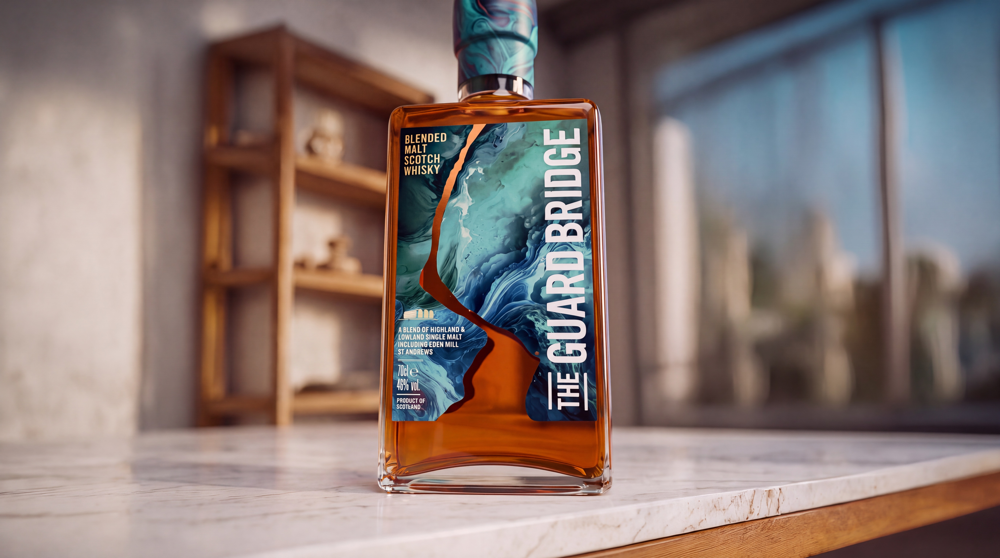
Who should be at The Lookout, and the films that get them there
What this work is for
You’ve a new distillery and a bar at the window. This work puts the bar on screen and gives people a reason to come in.
Put the bar itself on screen, with your own team behind it.
A drink with a name, and a date to come in for it.
Named serves built on your own gin and your own whisky, so nobody at the bar has to wonder what to order.
And keep every film easy to update. No Eden Mill lettering inside any frame we make. Your mark goes on the end card only, so every film updates by changing one card.
01 / Liquid · who we are
Liquid Economy · the market
Liquid Guardian · your brand
who’s listening
creative directors
directors
bartenders
stylists
photographers
The people who read the data make the films.
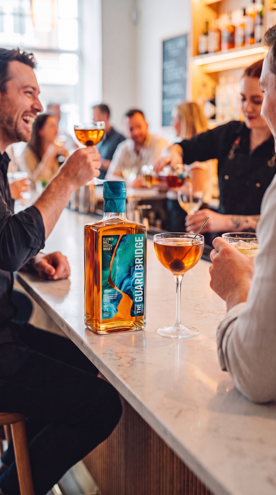
01 / Liquid · part of TrueGroup
Liquid is the drinks studio within TrueGroup, a UK content and marketing group. A senior team there checks every piece before it reaches you, and if this grows from one film to a full season, it stays with the same people.
We only work in drinks.
TrueGroup’s senior team checks every piece as well as us.
More crew and more hands when the work needs them.
TrueGroup: truegroup.agency.
01 / Who we have worked with
Drinks styling, digital tech and lighting on their campaigns, and cocktail programmes created for the brands.
On set · beyond drinksBars co-owned, opened and run in London, Los Angeles and New York. Training at the Connaught and the Savoy. Brand consultancy, launches, and openings with chefs. Trailer Happiness: Best International High Volume Cocktail Bar, Tales of the Cocktail Spirited Awards, 2017.
Brands and venues worked with by the people behind Liquid, as freelancers, bartenders and consultants. Not Liquid case studies; logos and campaigns belong to their owners.
01 / Liquid Guardian · our own tool
It gathers everything a brand has published, sorts it, and shows us what gets watched and what’s missing.
For Eden Mill it showed two things quickly. None of your 61 public films shows your spirits at The Lookout. And the serve on your own product page is the one we would build the first film around.
Your website, your Instagram, your YouTube channel, your product pages. Hundreds of images and films, read closely, before anyone opens a camera.
Who the brand speaks to, who answers, what the best-performing frames have in common, and what no one has made yet.
Every frame we make is checked against your own pack, your label and your true liquid colour before you see it, so your team shouldn’t have to fix any of them.
Guardian reads one brand. Its sister, Liquid Economy, reads the whole drinks market; you will see it on the next pages. Both read public material only. Nothing here comes from inside Eden Mill.
Section 02 of 07
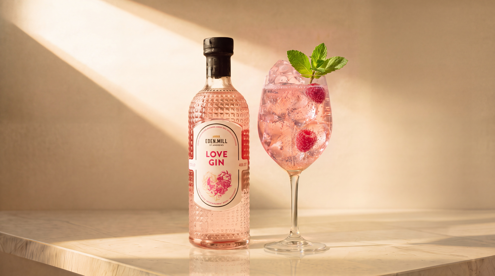
02 / Liquid Economy · the category, in five numbers
Gin's boom in UK pubs peaked in 2019 and has given share back since. Eden Mill already has the serves and the room. What’s missing is film of them.
Category figures, not Eden Mill data. WSTA via Morning Advertiser, 14 Apr 2025 · Bacardi Cocktail Trends Report via The Gin Guild, 19 Nov 2024 (consumer poll, 1,000 UK respondents, brand-commissioned) · Scotch Whisky Association, Facts & Figures, read 6 Oct 2026 · CGA by NIQ via The Spirits Business, 16 Jun 2025 · VisitScotland, Scotland Visitor Survey 2023 · St Andrews Links economic impact study via Welcome to Fife, Jun 2025.
Gin's share of on-trade spirits, 2019 to 2024.
The G&T is Britain’s favourite cocktail.
Visits to Scotch distilleries in 2024. Together, Scotland's most visited attraction.
Gin volumes in UK bars and pubs, year to March 2025.
Long-haul visitors to Scotland who visit a distillery; 44% of Americans. 40% of St Andrews' golfers are American.
02 / Liquid Economy · how the category films a serve
Serve films from across the drinks world, measured shot by shot.
Ways to cut a serve. The ones that work show the finished drink first and hold it longest at the end.
Of your 61 films show a serve at The Lookout. The pours you have are short inserts in cocktail how-tos.
Both of our films are cut that way.
Liquid cut study, 5 Oct 2026: 123 published serve films measured for cuts and shot length. Your films: 61 public YouTube films, watched shot by shot, 5 Oct 2026.
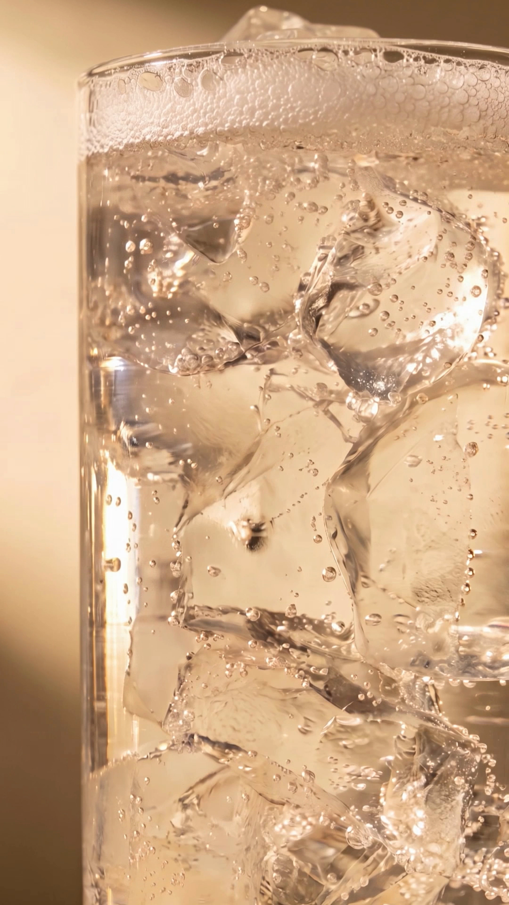
Section 03 of 07
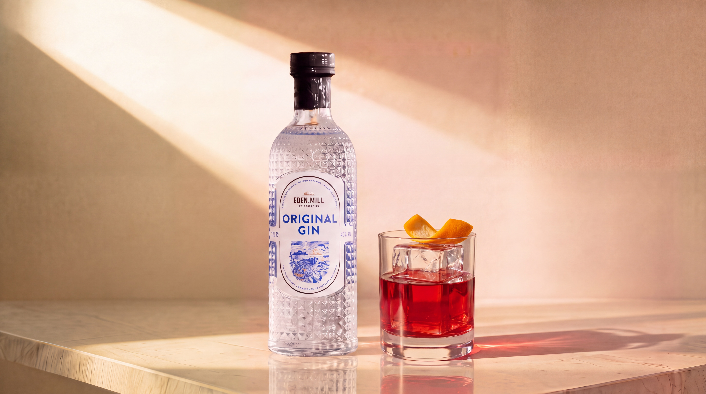
03 / Eden Mill, read closely · what we read
Between 12 September and 5 October we put everything Eden Mill has published through Liquid Guardian.
Instagram posts on the public grid, 51.8k followers.
YouTube films, watched shot by shot. 15 of your bottles identified in frame.
Products on the site. 27 pages and 123 photographs read.
And how it lands
Likes on an average post, with 2.6 comments. From 51,889 followers.
Engagement: about one follower in a thousand responds to a post.
Views on the typical YouTube film. 65 subscribers.
Public grid capture 12 Sep 2026 · site read 12–15 Sep · YouTube breakdown 5 Oct 2026 · likes, comments, engagement: Social Blade, 7 Oct 2026 · YouTube views: median of 38 films, 7 Oct 2026. Public material only.
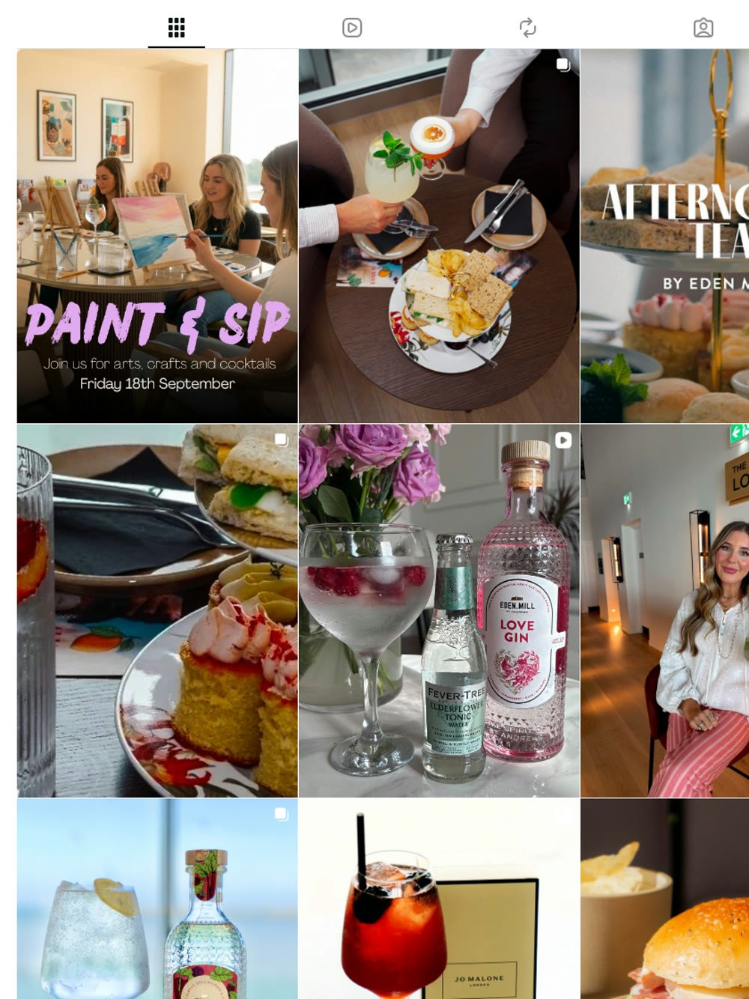
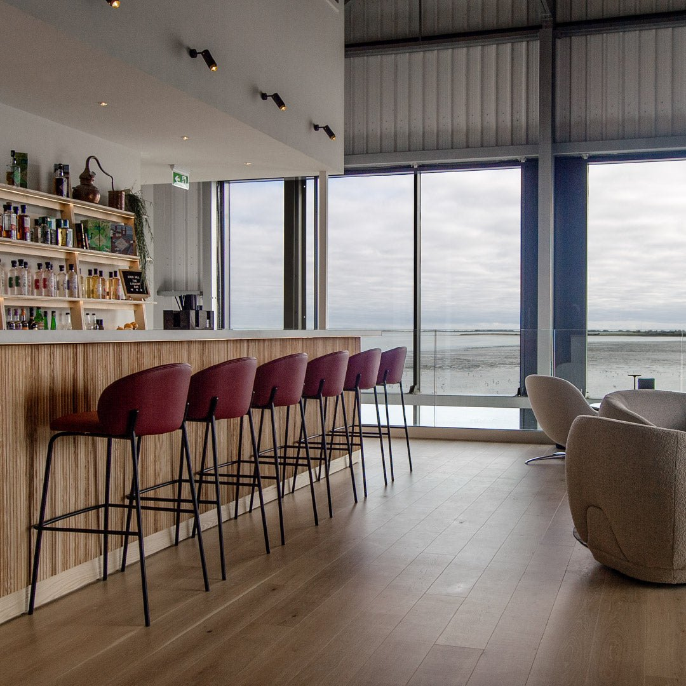
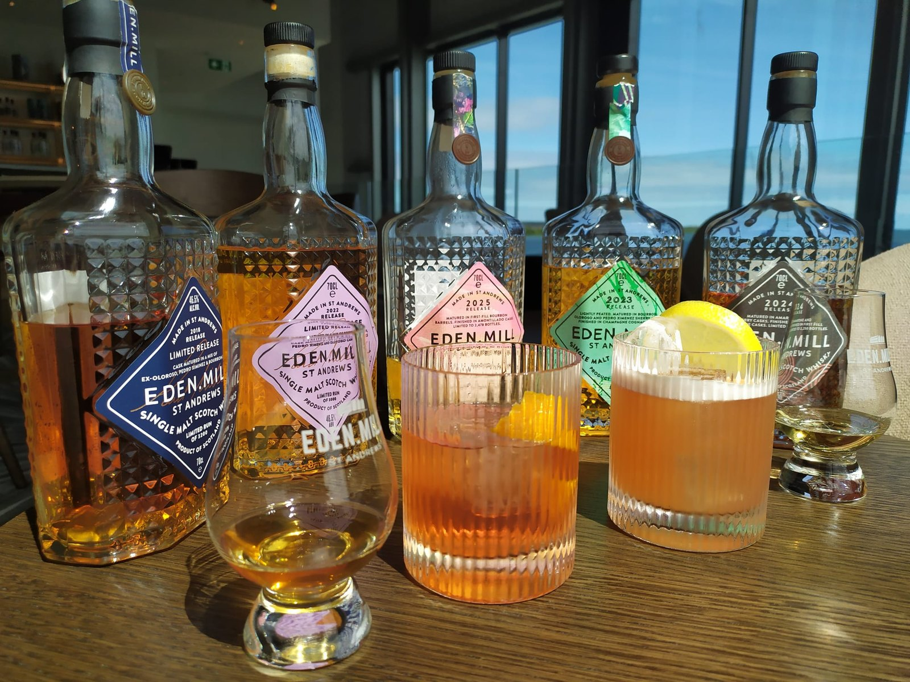
Your public Instagram grid, The Lookout and your whisky at the window, as published on @edenmill and edenmill.com.
03 / What Guardian found on Eden Mill · twelve things · tap any one
Section 04 of 07
04 / Two personas
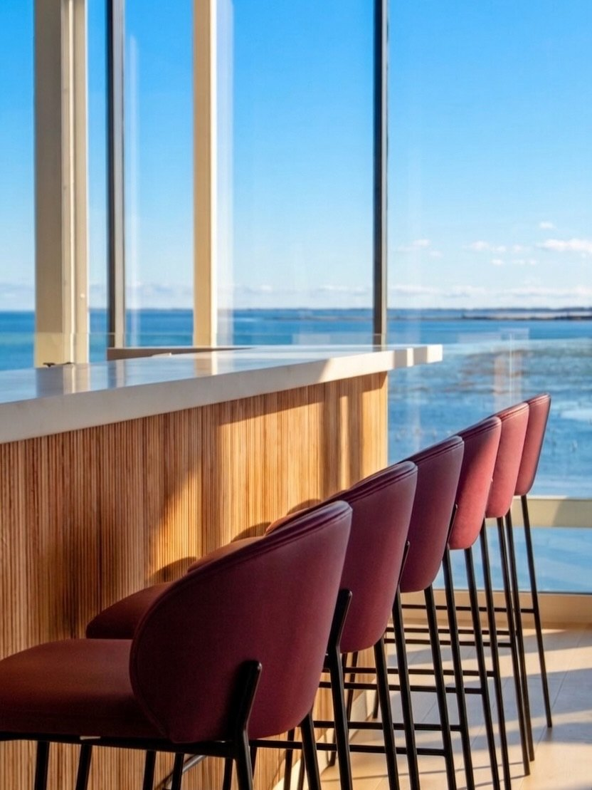
Wants somewhere new for a drink, not a tour. Comes if there’s a reason to come this week. Comes back if the drink has a name.
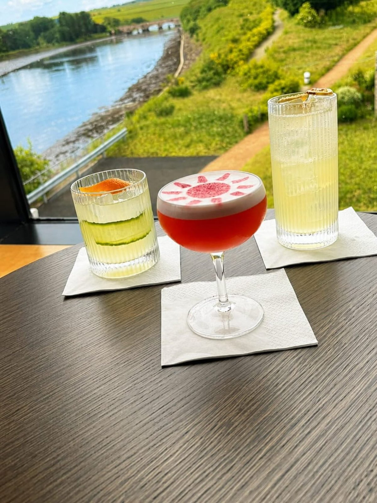
Decides the same day, on a phone, from Reels and Google. Buys a botanical gin and a long whisky serve, and a bottle to take home. Only finds you if the bar is on screen.
Our working read from your public estate, to confirm with your bar team. Both personas are adults, 25 and over, in every frame we make. Photographs: @edenmill.
04 / Two film concepts
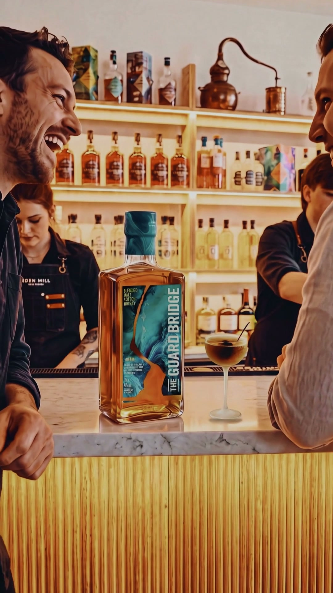
A longer film, 20 to 30 seconds, made in the room. Your bartender builds the house serve, start to finish, with the bar full behind them. It tells Fife there is somewhere new, and what to order when they get there. We have already made the first cut.
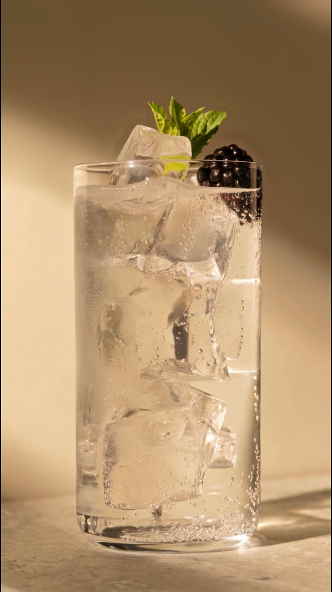
Three fifteen-second films, one per serve, made for the phone: Golf Gin & Tonic first, then The Guard Bridge, then the next on your list. A visitor sees one on a Reel and can be at the bar that afternoon. The Christmas one is already cut as a concept.
Concept frames, built from your real pack shots. Finished films are shot in The Lookout with the real liquid.
04 / The idea behind both films
A signature serve ends the "what do I order?" moment at a distillery bar. It is built the same way every time, so it can be filmed, posted and recognised. It carries the spirit's name into the shop on the way out.
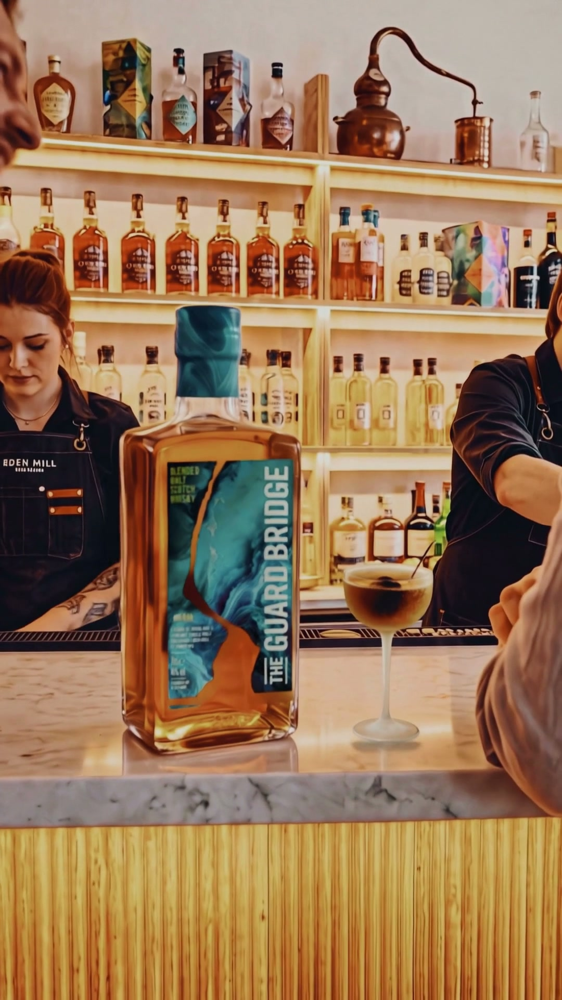
04 / The first two serves
The serve on your own product page: Golf Gin, a light tonic, blackberry and mint. Gorse, heather and lavender picked on the Old Course. Britain’s favourite cocktail, with your own gin in it.
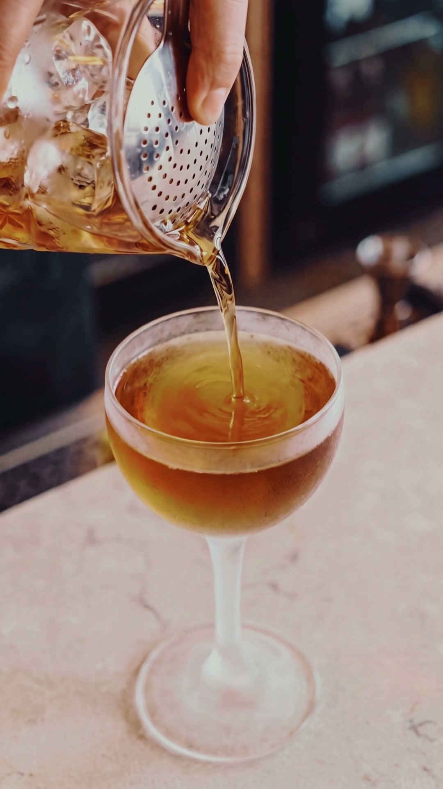
Your blended malt, stirred and strained into a frosted glass. It’s the kind of drink people ask the bartender about. The bar names it, and we won’t write a recipe you haven’t.
Next: lock the serve with your bar team, then build the calendar around it: Christmas, the longest night, Hogmanay. After these two, from your published list: the Guard Bridge Highball and the Love Gin Spritz.
Serves as published on edenmill.com product pages. The Guard Bridge: blended malt, 46%, non chill filtered, natural colour. "Britain's favourite cocktail": Bacardi UK poll via The Gin Guild, 19 Nov 2024.
Section 05 of 07
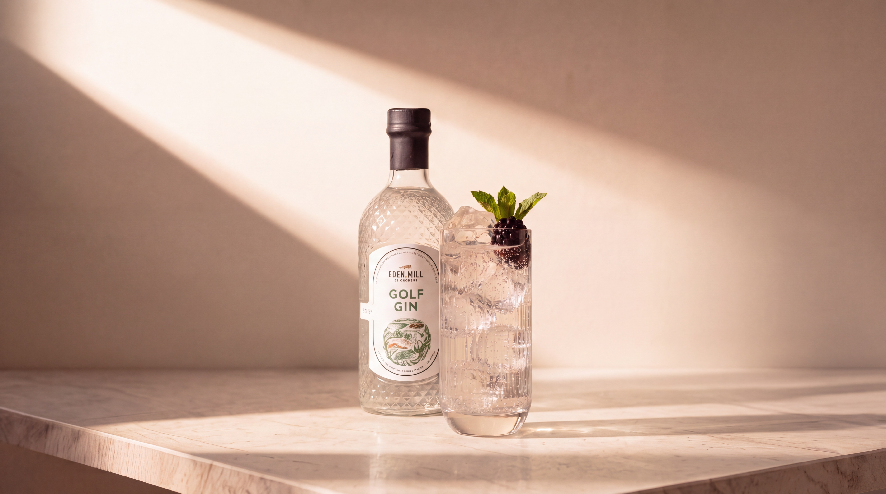
05 / Route 1 · the local film · the look
Your room as it is, in daylight. Pale oak, marble, the window, the copper, your aprons, in their natural colour. We film the build: measure, stir, strain, cherry. The last shot is the bar with people in it, because that’s what we’re selling.
Daylight from the window, warm only where the oak is.
Room tone, glass, the stir. Music low.
Your bartender, and guests who look like your guests. Adults, 25 and over, always.
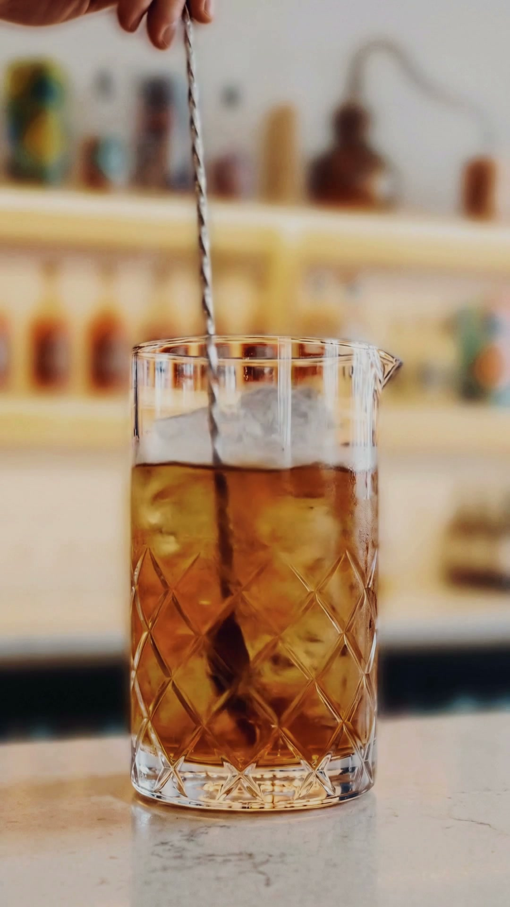
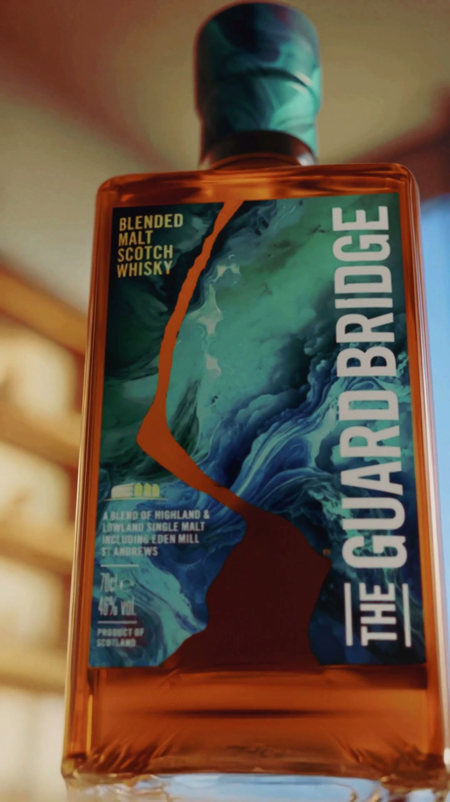
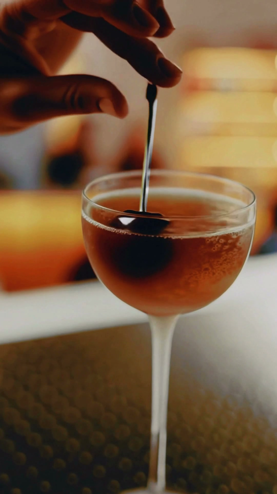
05 / Route 1 · the local film · first cut · 13 s
The Guard Bridge, stirred and strained at your bar. Bottle, measure, stir, strain into a frosted Nick & Nora, a cherry on a silver pick, and a slow move in to the bottle and the glass with the bar full behind them.
The Guard Bridge, blended malt, 46%. Stirred and strained. The bar names the drink.
Your back bar, your aprons, the copper, from the second shot. You know where you are before the first pour.
The finished film is shot in the room, with the real liquid and your bartender, at 20 to 30 seconds. This cut is the plan, agreed before a camera is booked.
Notes from the edit
The bar is behind the build from the second shot, so the last shot feels familiar.
The last shot is the longest in the film and the whole point: your bottle, the serve, and people at the bar.
The end card carries the bar's name, how to find it and the responsible-drinking line.
05 / Route 1 · three frames that do the work
The bar is in frame from the second shot. It shows people the room, and gives them a drink to come in and order.
Runs on Reels and Stories to a radius around St Andrews and Fife, and as the video on your Google listing, where a same-day visitor decides.
Your bottle, your apron, your back bar, from the second shot.
Stirred, strained, a cherry on a silver pick. The drink you do not make at home, which is the reason to come in for one.
Your bottle, the serve, your team, people at the bar. On the shoot day, this is the real room.
05 / Route 2 · the visitor films · the look
Hard, low winter sun, clear ice, a thin straight glass and one colour in the frame. The camera stays still and the liquid moves: ice, measure, pour, top, hold. Each serve gets its own hour of light at the window, so the three look like a set.
Silver for the Golf Gin, gold for The Guard Bridge, violet at dusk for Love Gin.
Hard cuts, uneven lengths, nothing wet is sped up. The hero is held longest.
Serve name, the bar and the responsible line. Your mark goes here and nowhere else.
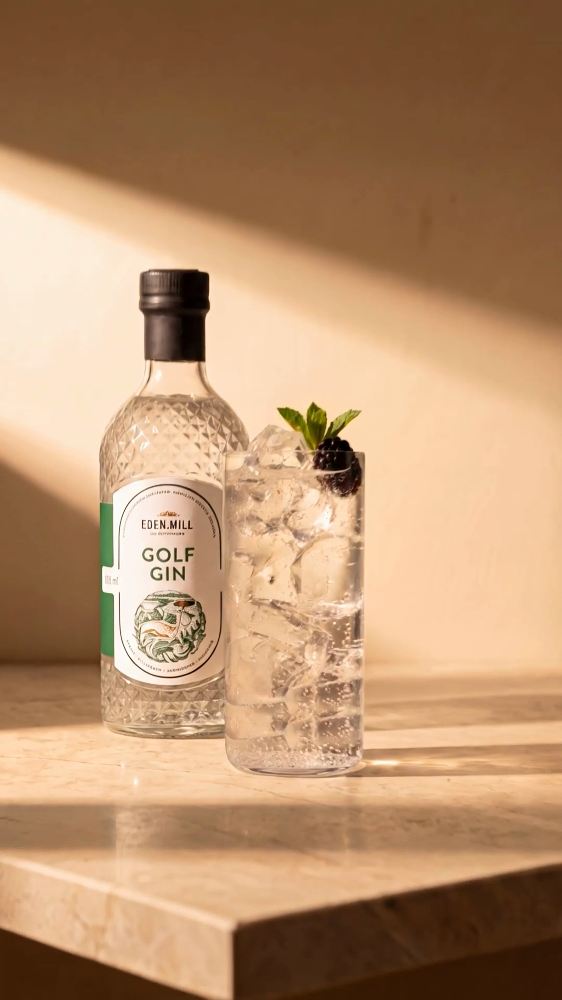
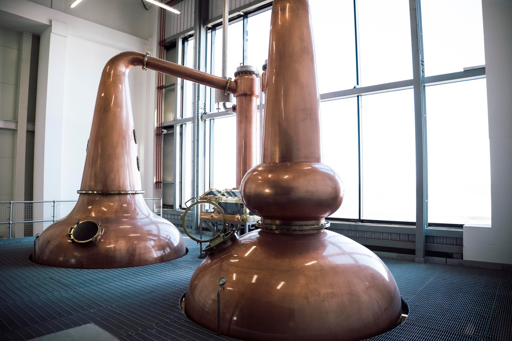
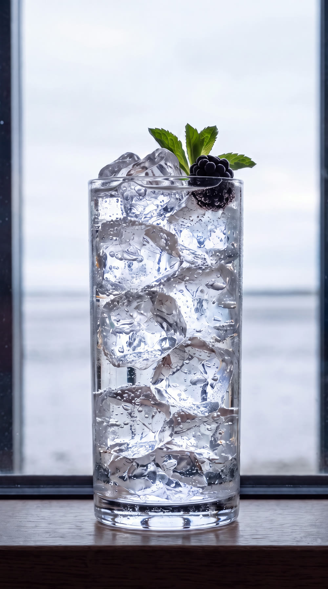
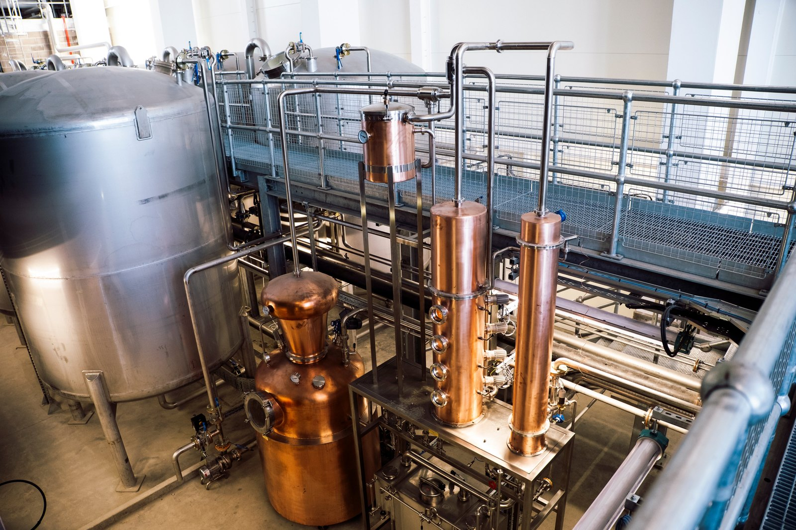
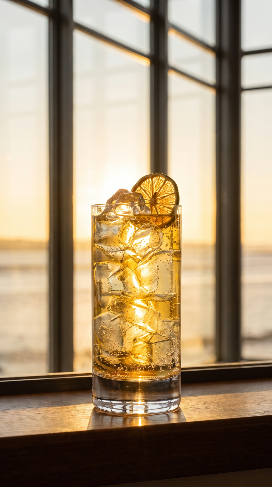
05 / Route 2 · the first visitor film · Golf Gin & Tonic · 19 s
Golf Gin, chipped clear ice, a measured 25 ml, light tonic, blackberry and fresh mint, as on your own product page. The nineteenth hole is the drink after the round, and in December that drink is a Golf Gin & Tonic.
Golf Gin 42% · 25 ml · light tonic · blackberry and mint. One measured serve, shown once.
Hard cuts, in the order the drink is made.
Adult hand. No golf played with a drink in frame. "Please enjoy responsibly · drinkaware.co.uk" on the card. Written to the CAP Code and the Portman Group code.
01–03 Your bottle in hard low sun. The label is your pack shot, never redrawn.
04–08 The build, in order.
09–10 Two close shots of the fizz, before the hold.
11 The hero, held longest. The only colour in the frame is the blackberry.
12 The end card, the only place your name appears.
Section 06 of 07
06 / Our promise to your brand team
Three things we hold on every frame, and where in this deck you can see each one.
Each spirit's true colour, the same in every shot and every season. The next page shows The Guard Bridge the same amber in a jigger, a mixing glass and a frosted glass.
Your real artwork, every letter, every frame. Where a shot let the label drift, we locked your real label back onto the bottle, frame by frame.
Who the guest is, how you speak, and the frames you would never want: no shouty craft voice, no fireside cliché, nobody under 25.
| We check | And it passes when |
|---|---|
| The bottle | Proportions, shoulder, closure and fill level match your pack shot. A bottle that bends, swells or slides does not pass. |
| The label | Your artwork, exact. Every character readable at the size it will be seen; no invented words, no redrawn type. |
| The liquid | Golf Gin clear, Love Gin pink, The Guard Bridge amber, the same in every shot. The ice in the close-up is the ice in the hero. |
| The glass | One glass per serve, across the whole set. The glass in the build is the glass in the final frame. |
| The serve | Spirit, measure, mixer and garnish as your bar makes it. We never type a measure the bar has not agreed. |
| The rules | The CAP Code, the Portman Group code and Meta's alcohol rules. Adults only, one measured serve, the responsible line on every card. |
Two sets of eyes on every piece: ours on the drink, TrueGroup’s senior team on the whole.
We keep a list of what we got wrong, so the second film starts ahead.
Every shot is matched to the opener: the teal of the closure, the amber of the whisky, the neutral of the marble. We measure it rather than eyeball it.
This is what we mean by holding your liquid colour. The Guard Bridge is the same amber in a jigger, a mixing glass and a frosted glass, and the label stays a deep teal, never green.
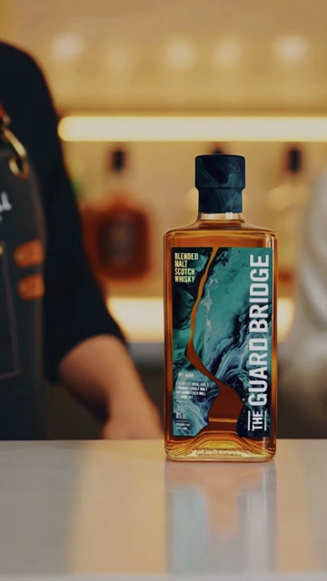
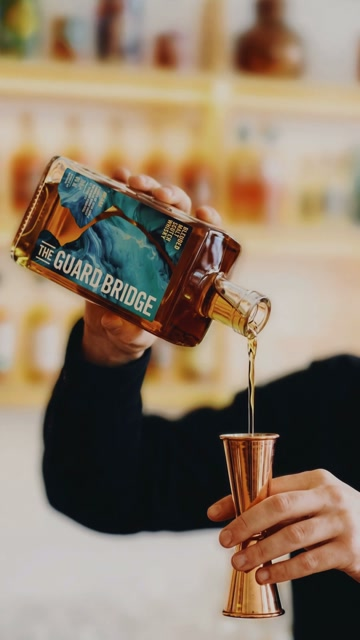
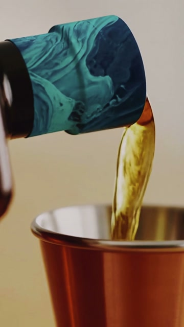
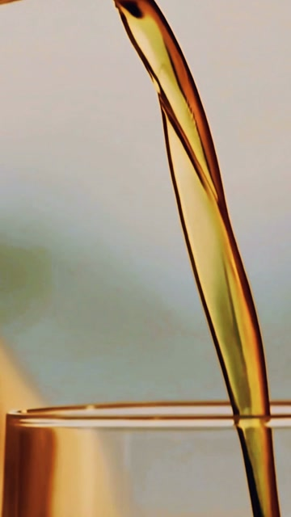
06 / How we build it · five steps
True models of The Guard Bridge, Golf Gin and Love Gin: shape, glass, closure and liquid, built from your pack shots.
Each bottle, from every angle, glass and cap included, so the model matches the object in your hand rather than a drawing of it.
High-resolution flat scans of every label, or your artwork files if you have them, so every letter is right at any size.
We build each bottle and label once, from those scans, so they never drift from one film to the next.
Camera paths measured from real films drive our shots, so the bottle never slides.
And the shoot day films the real liquid.
This is the workflow we would build with Eden Mill as our first brand. The films in this deck were made with your real label locked onto generated footage by hand; the steps above make that automatic.
Section 07 of 07
07 / How a guest finds you
Reels and Stories around St Andrews and Fife. The visitor finds you the same day.
The local film · signature-serve shorts · paid cut-downs
Where a same-day visitor decides. The bar, full, on screen.
16:9 loop of the local film on your Google listing and site
A reason to come in this week.
The Lookout Log · seasonal films
No “what do I order?” moment. The serve they saw is on the menu.
Menu stills · the QR card on the bar
The serve carries the spirit’s name into the shop on the way out.
Gift stills in 4:5 and 1:1
Every item here is on the next two pages: the deliverables, and the Lookout Log.
07 / What one shoot can feed · the launch set is on page 37
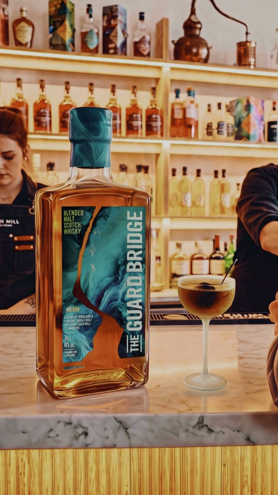
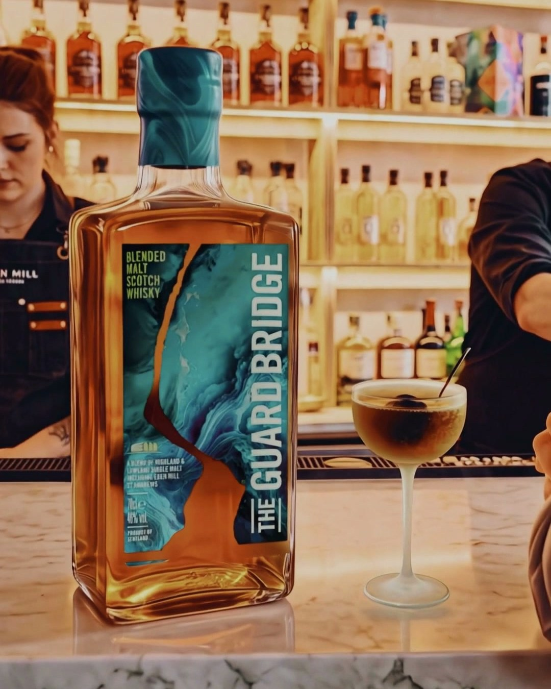
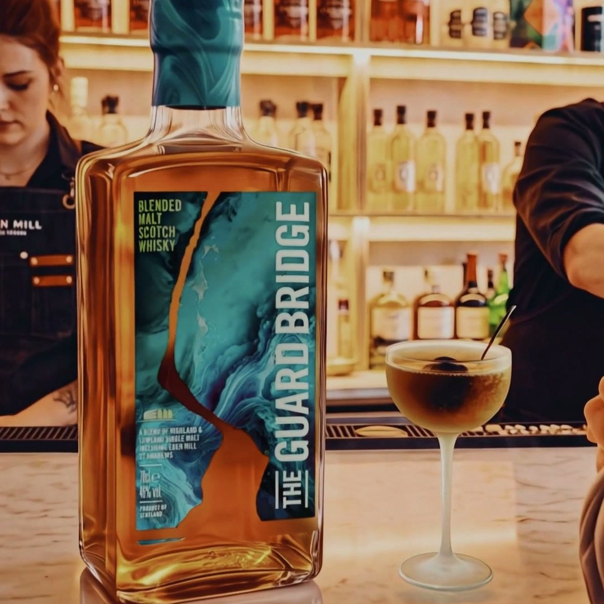
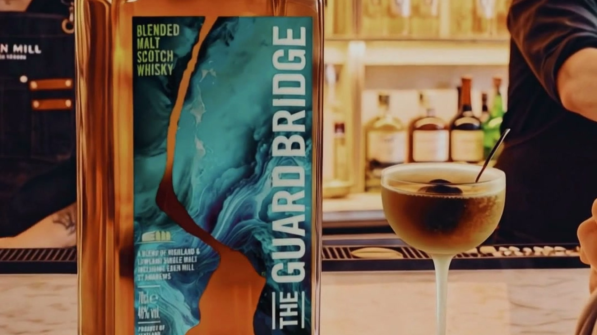
One frame of the local film, cut to each size. Every hero frame is shot with room around it, so each crop keeps the label whole and the liquid uncropped.
| What | What it is, and where it goes |
|---|---|
| The local film | 20–30 s, shot at The Lookout with your bartender. Reels, Stories with a "book the Lookout" sticker, your Google listing, a 16:9 loop for the site and the in-bar screen. |
| Signature-serve shorts | 15 s per serve, plus a 6 s cut-down and a 16:9 loop each. Golf Gin & Tonic first, then The Guard Bridge, then the next on your list. |
| Bar-craft films | A longer build, start to finish, for YouTube and the site. It gives the channel something to grow on. |
| Stills | Menu and gift stills in 4:5 and 1:1, the serve by name at the point of ordering, a QR card for the bar. |
| Seasonal films | Christmas first, then the longest night and Hogmanay. One serve film and one gift still each. |
| Paid cut-downs | 9:16, 4:5 and 1:1, with copy written to the CAP Code, age-gated, for a radius around St Andrews and Fife. |
Platform sizes as published, October 2026. The launch set on page 37 covers the local film, the serve shorts and the stills.
07 / For your team · The Lookout Log
The local needs a reason to come back every week.
So we hand your team a template they shoot on a phone, from one fixed spot at the window: this week’s sky, this week’s serve, Sundowners on Friday. Same frame and same order each time, so there’s something new on the grid every week.
A fixed frame, marked at the window.
A short weekly routine for the bar team.
Your end card on every post.
07 / How we work · who does what
| Eden Mill | Liquid |
|---|---|
| The serves and the recipes. The bar names the drink. | The research, the concepts and the shot plan. |
| Your bartender and the room on the shoot day. | The shoot, the edit, the grade and every format. |
| Label artwork files, if you have them. | Bottle, label and liquid-colour checks on every frame. |
| Sign-off on every piece, including compliance. | Delivery, and a second review by TrueGroup’s senior team. |
Creative lead. The research, the concepts, on set for the shoot, and the edit.
On the TrueGroup side.
A second pair of eyes on every piece before it reaches you.
07 / How we will know it worked
We’ll agree a weekly visits baseline with you before the shoot.
No targets until the baseline is in, and no figures borrowed from anyone else’s bar. The films are judged on what happens at your door.
Week by week, from your own booking system.
Week by week, from your own till.
Film by film, from your own Instagram insights. Saves and shares rather than likes: a save is someone keeping the drink for later.
How we read it. The same three numbers over the same weeks, before the films go live and after. We go through them with you once the Christmas run is over.
07 / The dates · working back from Christmas
You choose the first serves and a shoot date.
The two weeks start here. Serves, recipes and the visits baseline agreed.
One day at The Lookout: your bartender, the real liquid, the window.
Two weeks from the deposit. The Christmas film first.
Every piece, compliance included, signed off by your team.
Christmas at the nineteenth hole, through to Hogmanay.
These are the latest dates that still put the Christmas film on air on 1 December. Every week earlier is a week more of Christmas on air. The shoot date is agreed with your bar team.
07 / The package · and the next step
€3,100
One shoot day at The Lookout · the local film, The Guard Bridge, 20 to 30 s · three signature-serve films, each with a 6 s cut-down and a 16:9 loop · menu and gift stills in 4:5 and 1:1 · captions with the responsible line · a 30-day posting calendar, with the Lookout Log template for your team.
50% on signing, balance on delivery. Delivered two weeks from cleared deposit. Travel to be agreed separately.
To agree after the launch set
If the launch set works, we’d talk about two films and six to eight stills a month, around Christmas, the longest night, Hogmanay and the golf season. No price until we’ve seen what the room and the audience do.
€700 / day
If you shoot with your own photographer or agency, Liquid can style the serve, the ice, the glass and the pour on set.
Who owns what. The plates and films we make for you are yours. The method we use to make them stays with Liquid.
Choose a shoot date at The Lookout. We send the agreement and the deposit invoice, and the two weeks start when the deposit clears.
Prices in euros, excluding VAT.
James Huertas · Liquid, part of TrueGroup
james@huertas.co.uk ↗
+34 643 147 756 · +44 7562 393 477
Concept frames in this deck were built from Eden Mill's own published pack shots and photographs for pre-production; finished films are shot in The Lookout. Serves shown are Eden Mill's published recipes. Category figures are sourced on the page and are not Eden Mill data. Please enjoy responsibly · drinkaware.co.uk